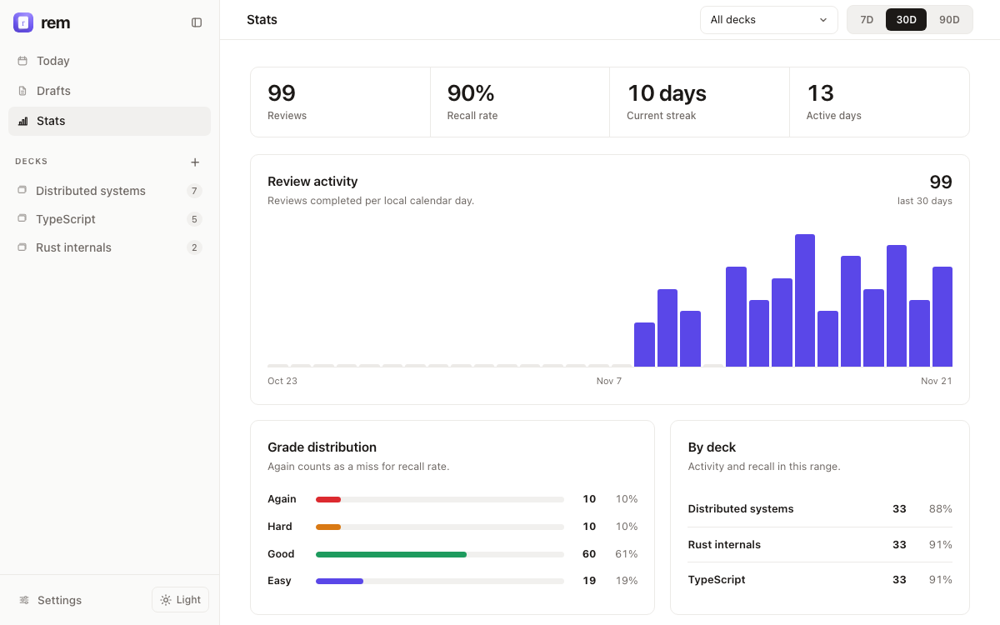

Use your agent to turn a codebase, research, or any topic into source-grounded recall
prompts. You approve what enters your study plan; FSRS-7 keeps it sharp across desktop,
terminal, and iPhone.
One shared Rust coreFSRS-7MarkdownSQLiteTauriSwiftUICloud Sync
A deliberate capture loop
Your agent can explore. You decide what sticks.
Whether you are learning a codebase or a broader topic, generated content never becomes
a scheduled card by accident. Every prompt passes through an inspectable workflow.
01
Explore a system or topic
Work through code, documentation, research, or study material with your agent.
02
Generate recall prompts
The agent proposes concise drafts grounded in the material, with rationale and sources.
03
Try and approve
Answer it, edit it, and accept only what belongs in your study plan.
04
Study anywhere
FSRS-7 schedules each review identically across the desktop app, terminal, and iPhone.
Desktop + iPhone + Terminal
One calm engine. Everywhere you study.
01 / 05
01 · Calm daily ritual
Open rem, see what’s due, start in one tap or keystroke.
Today keeps your queue inviting on both Mac and iPhone — estimated session time,
deck progress rings, collapsible icon-rail sidebar, and instant cross-deck study.
✓ Estimated duration & live due counts before you begin
✓ Press Enter on desktop or tap Start review on iPhone
✓ Identical Quiet Paper aesthetic in light and dark themes
Desktop · TauriiPhone · SwiftUI
rem · Today
02 · Focused recall
Distraction-free review for rich Markdown cards.
Navigation folds away during review on both desktop and iPhone so attention stays
on the prompt, syntax-highlighted code, images, and FSRS-7 interval previews.
✓ Syntax-highlighted code blocks, quotes, and offline images
✓ Keyboard 1–4 on desktop, haptic 4-button dock on iPhone
✓ Undo last grade or edit any card right mid-session
Dark modeShared StudySession
rem · TypeScript Review
03 · Capture & approval
Approve agent drafts. Capture ideas on the go.
Triage source-grounded AI agent proposals in the desktop Drafts inbox before
they ever enter your schedule, or tap + on iPhone to capture a
Markdown card in seconds.
✓ Front-first draft triage with rationale and file provenance
✓ Paper-canvas iPhone editor with live Preview & Photos
✓ Unapproved drafts stay strictly local until accepted
Desktop Drafts InboxiPhone Quick Capture
rem · Drafts
04 · Actionable insight
Watch your recall and rhythm compound.
Track daily review activity, recall rate, active streaks, grade distribution,
and per-deck performance across 7, 30, or 90-day windows — synced across devices.
✓ Filter globally or focus on any individual deck
✓ 7D, 30D, and 90D activity and recall trends
✓ Optional daily iOS reminders only when cards are due
Desktop StatsiPhone Stats
rem · Stats

05 · One review engine
Stay in the terminal. Pick up on your phone.
rem study drives the exact same Rust StudySession as
the desktop and iPhone apps. Grade a few cards in your shell, sync incrementally,
and finish the rest away from your desk.
✓ Rich terminal Markdown with FSRS interval previews
✓ Scriptable CLI & JSON batches for coding agents
✓ HLC-based Cloud Sync keeps every device converged
rem study TUICloud Sync · HLC
Built to remain yours
A calm study tool with strong foundations.
Local by default
Your decks, cards, assets, and complete review history live on your device in SQLite.
FSRS-7 in Rust
Modern scheduling with configurable retention, learning steps, daily limits, and weight optimization.
Agent-first CLI
Create source-grounded drafts from codebases and research with Codex, Claude Code, pi,
or your own scripts.
Native iOS companion
SwiftUI iPhone app backed by the same Rust core via UniFFI — offline review, Quick
Capture with Photos, stats, and daily reminders.
Optional Cloud sync
Sync decks, reviews, and media across desktop, CLI, and iPhone via
rem Cloud or
your own self-hosted Cloudflare Worker.
Rich Markdown & backups
Syntax-highlighted code, images, GIFs, tags, and full-fidelity portable JSON backups.
Start remembering
Native where you study. Simple where you capture.
Install the desktop app and CLI together on macOS or Linux, download Windows packages
from GitHub Releases, or build the SwiftUI iOS companion from source.
$ bash tools/build-ios-xcframework.sh --debug && open ios/Rem.xcodeproj
macOS releases are signed and notarized. Windows installers and a standalone CLI zip
are available from Releases (Windows builds are unsigned). See
code signing and the
iOS build guide.